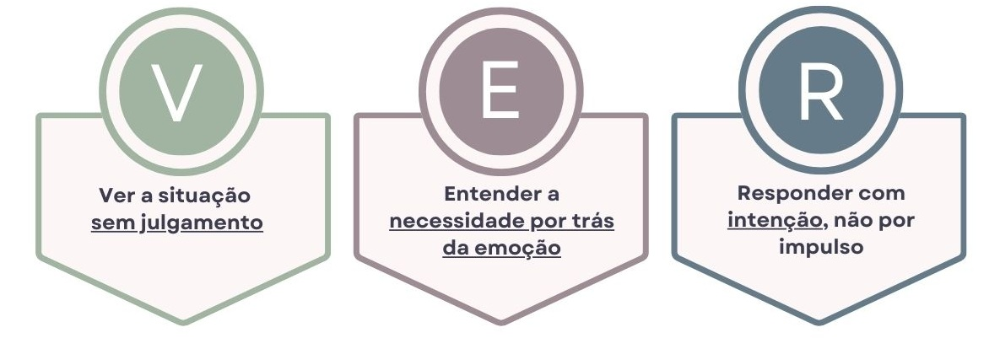

Você está ATRASADO.
Já era para estar no carro, mas ainda não conseguiu levar seu filho para o banho.E agora? Você sabe o que fazer?

Em 2 minutos, faça o teste e descubra se você tem tendência Autoritária, Permissiva, Evitativa ou Consciente nos momentos de crise.
No final, receba um diagnóstico da sua maior dificuldade e um plano de solução.
Diagnóstico:
0
Seu Plano de Evolução Emocional
Com base nas suas respostas, posicionamos você em nosso Mapa de Consciência Parental, um modelo que mostra como os adultos tendem a reagir emocionalmente em momentos de pressão.
Seu mapa mostra dois pontos importantes:
🔴 Onde você está hoje
🟢 Sua melhor versão: mais consciente e conectada
Seu mapa mostra dois pontos importantes:
🔴 Onde você está hoje
🟢 Sua melhor versão: mais consciente e conectada
A boa notícia é que a mudança entre esses dois pontos não depende de personalidade, estudos extensos ou força de vontade infinita. Ela depende de um caminho claro.
Um caminho para mudar a sua forma de VER as crises:

Para isso, preparamos um protocolo simples e prático, estruturado para te ajudar nesse processo.
Você não precisa memorizar teorias nem estudar conteúdos extensos.
Basta seguir um protocolo de 5 passos, simples e prático, que você pode começar a aplicar hoje.